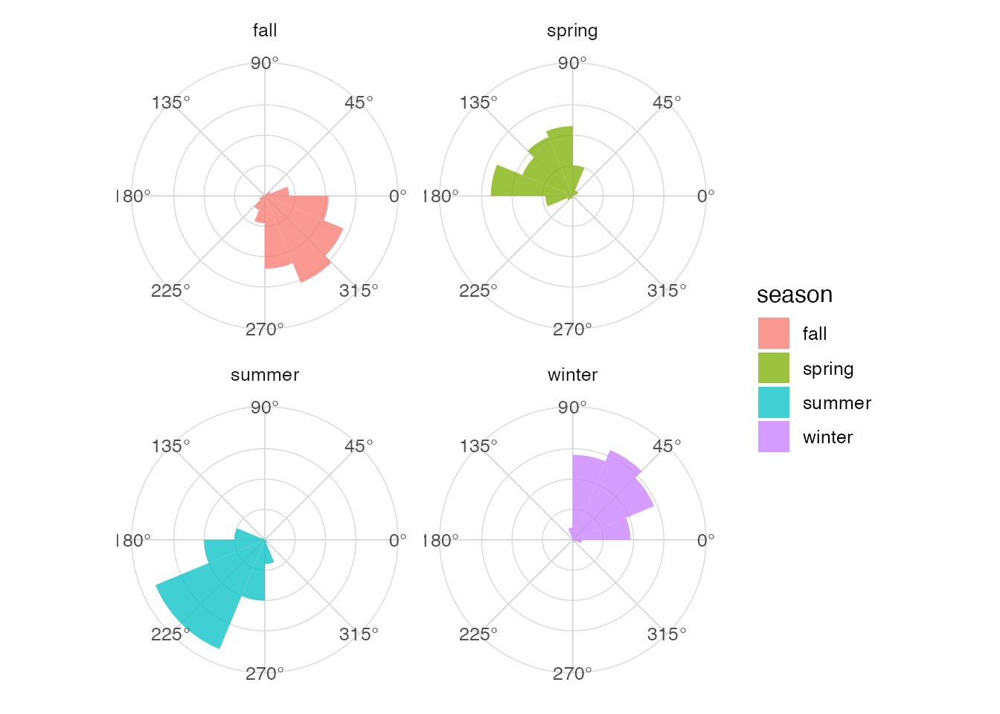
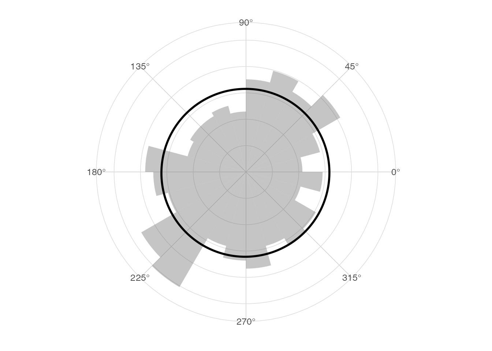
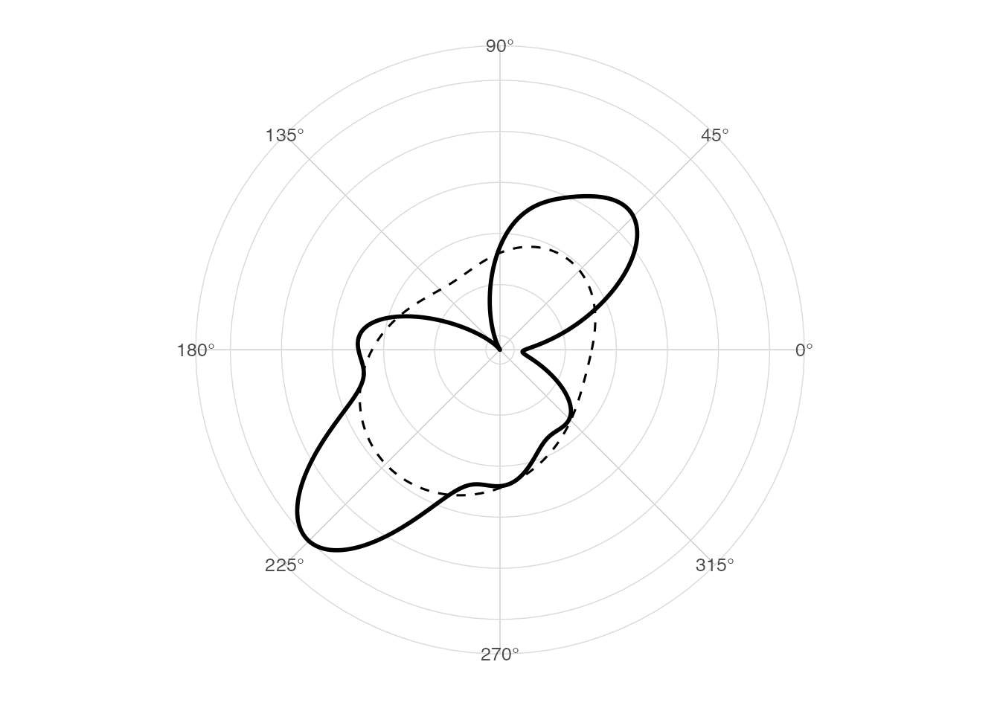
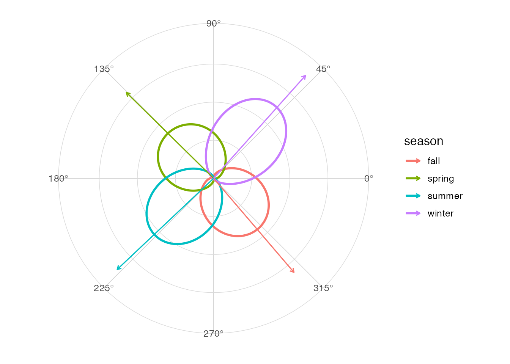
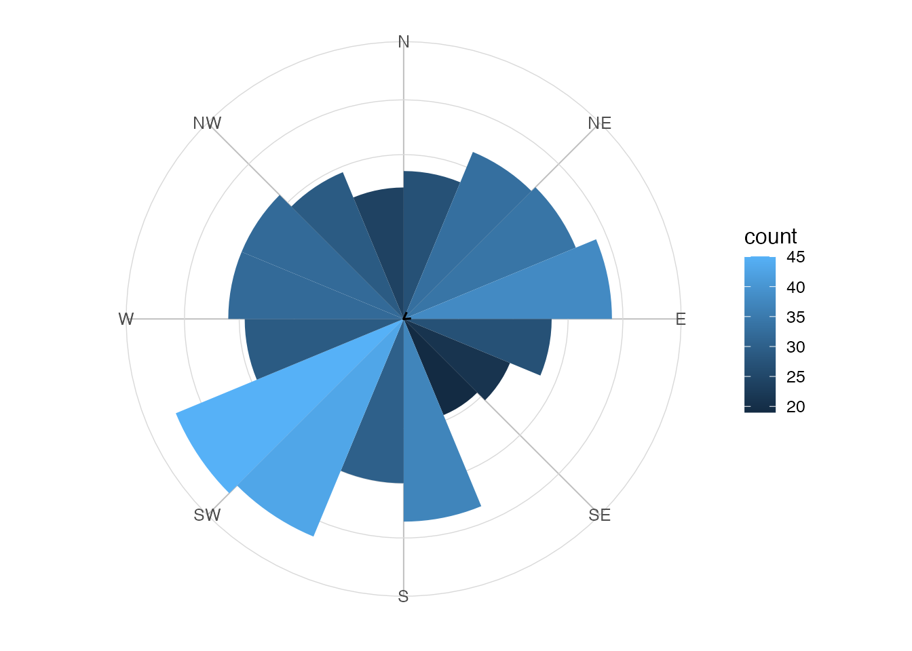
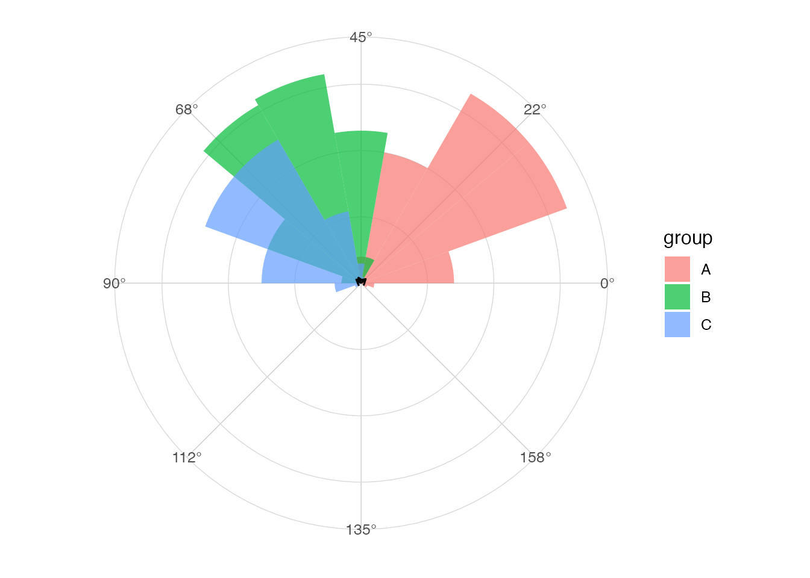
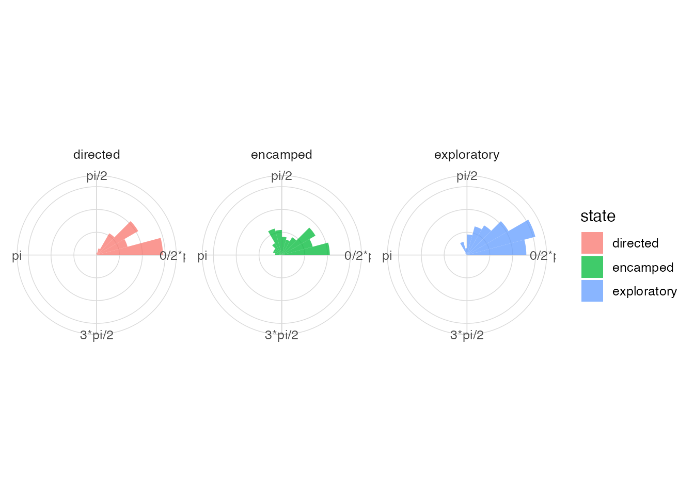
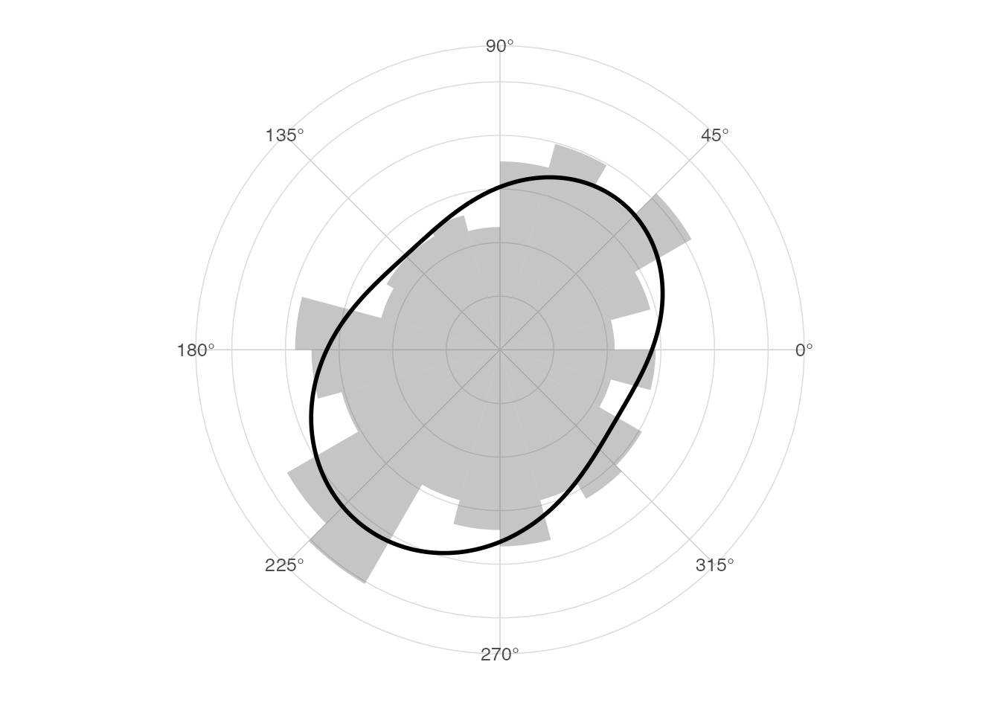
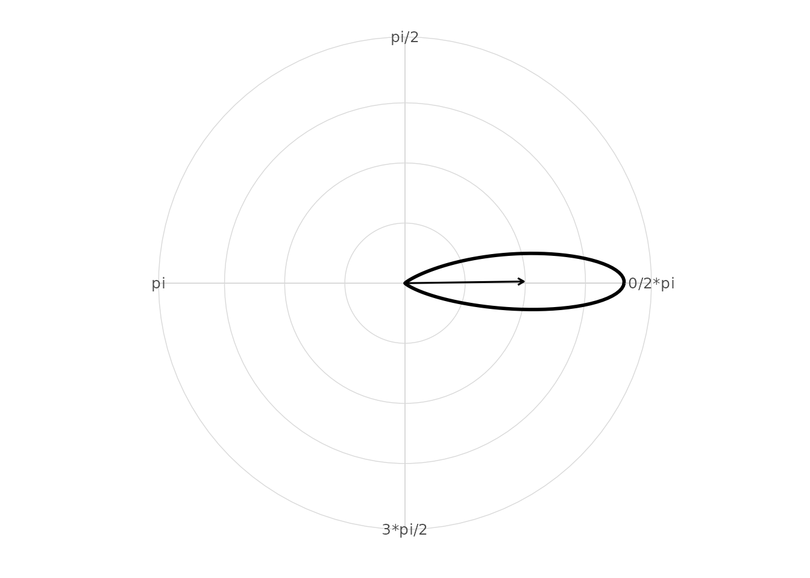
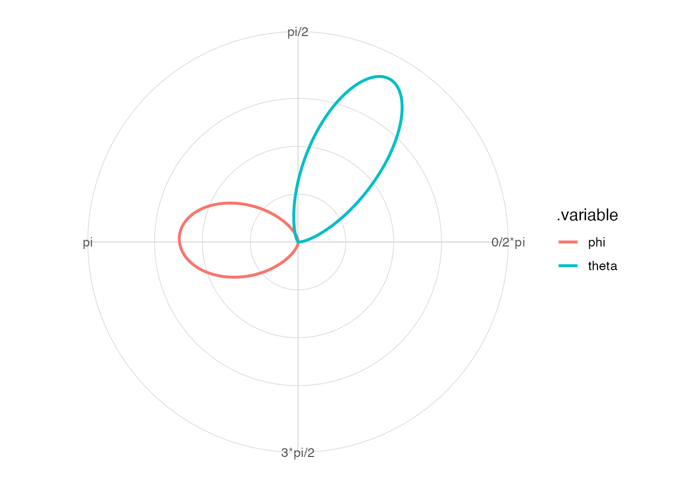

Overview
ggcircular extends ggplot2 for circular,
axial and directional data. This vignette gives a complete first tour of
the package: angle conventions, rose diagrams, circular densities, mean
directions, uncertainty, axial data, movement data, mixtures of von
Mises distributions and model diagnostics.
library(ggplot2)
#> Warning: package 'ggplot2' was built under R version 4.5.2
library(dplyr)
#> Warning: package 'dplyr' was built under R version 4.5.2
#>
#> Attaching package: 'dplyr'
#> The following objects are masked from 'package:stats':
#>
#> filter, lag
#> The following objects are masked from 'package:base':
#>
#> intersect, setdiff, setequal, union
library(ggcircular)Why circular data are different
Circular observations live on a periodic scale. In radians,
0 and 2 * pi represent the same direction.
This means that linear tools can fail near the boundary.
boundary_angles <- tibble(
theta = c(0.05, 0.10, 2 * pi - 0.10, 2 * pi - 0.05)
)
boundary_angles |>
summarise(
arithmetic_mean = mean(theta),
circular_mean = mean_direction(theta),
Rbar = mean_resultant_length(theta)
)
#> # A tibble: 1 × 3
#> arithmetic_mean circular_mean Rbar
#> <dbl> <dbl> <dbl>
#> 1 3.14 0 0.997The arithmetic mean is near pi, even though the
observations are concentrated near zero. The circular mean uses sine and
cosine components, so it respects the periodic scale.
Data included in the package
The package ships with four simulated datasets. They are small enough for examples and large enough to show realistic grouped workflows.
glimpse(wind_directions)
#> Rows: 500
#> Columns: 4
#> $ station <chr> "station_C", "station_B", "station_B", "station_B", "station…
#> $ direction <dbl> 3.61399414, 0.51640381, 3.18127144, 2.81398312, 3.48203785, …
#> $ speed <dbl> 8.344303, 21.651462, 18.502725, 17.959547, 14.707662, 23.812…
#> $ season <chr> "summer", "winter", "summer", "spring", "summer", "winter", …
glimpse(animal_steps)
#> Rows: 600
#> Columns: 8
#> $ id <chr> "animal_1", "animal_1", "animal_1", "animal_1", "animal_1"…
#> $ time <int> 1, 2, 3, 4, 5, 6, 7, 8, 9, 10, 11, 12, 13, 14, 15, 16, 17,…
#> $ x <dbl> -2.0936857, -1.2574724, 1.3703509, 1.8277511, 3.1477115, 3…
#> $ y <dbl> -2.206504, -4.007244, -5.236538, -5.303458, -5.208255, -5.…
#> $ step_length <dbl> NA, 1.9854255, 2.9011413, 0.4622696, 1.3233892, 0.1811402,…
#> $ bearing <dbl> NA, 5.14713037, 5.84562829, 6.13791093, 0.07200064, 0.1664…
#> $ turn_angle <dbl> NA, NA, 0.69849792, 0.29228264, 0.21727502, 0.09441297, -2…
#> $ state <chr> "exploratory", "directed", "exploratory", "encamped", "dir…
glimpse(hourly_activity)
#> Rows: 240
#> Columns: 5
#> $ id <chr> "id_1", "id_1", "id_1", "id_1", "id_1", "id_1", "id_1", "id_1…
#> $ hour <int> 0, 1, 2, 3, 4, 5, 6, 7, 8, 9, 10, 11, 12, 13, 14, 15, 16, 17,…
#> $ angle <dbl> 0.0000000, 0.2617994, 0.5235988, 0.7853982, 1.0471976, 1.3089…
#> $ activity <dbl> 0.7068110, 0.9307937, 0.8454886, 1.1279882, 1.2763149, 1.8896…
#> $ group <chr> "control", "control", "control", "control", "control", "contr…
glimpse(axial_orientations)
#> Rows: 300
#> Columns: 3
#> $ sample <chr> "sample_4", "sample_9", "sample_1", "sample_3", "sample_7"…
#> $ orientation <dbl> 0.33720049, 1.29682693, 0.90355276, 1.08422434, 1.01917603…
#> $ group <chr> "A", "C", "B", "C", "C", "C", "B", "C", "A", "A", "B", "A"…
wind_directions |>
count(season, station)
#> # A tibble: 16 × 3
#> season station n
#> <chr> <chr> <int>
#> 1 fall station_A 40
#> 2 fall station_B 31
#> 3 fall station_C 27
#> 4 fall station_D 33
#> 5 spring station_A 32
#> 6 spring station_B 26
#> 7 spring station_C 31
#> 8 spring station_D 26
#> 9 summer station_A 21
#> 10 summer station_B 36
#> 11 summer station_C 42
#> 12 summer station_D 39
#> 13 winter station_A 17
#> 14 winter station_B 33
#> 15 winter station_C 27
#> 16 winter station_D 39Directional versus axial data
Directional data have an arrow. For example, a bearing of north and a
bearing of south are different directions. Axial data have an
orientation but no arrow, so an angle and the angle plus pi
are equivalent.
directional <- c(0, pi)
axial <- c(0, pi)
tibble(
case = c("directional", "axial"),
Rbar = c(
mean_resultant_length(directional),
mean_resultant_length(axial, axial = TRUE)
),
mean = c(
mean_direction(directional),
mean_direction(axial, axial = TRUE)
)
)
#> # A tibble: 2 × 3
#> case Rbar mean
#> <chr> <dbl> <dbl>
#> 1 directional 6.12e-17 NA
#> 2 axial 1 e+ 0 0For axial calculations, ggcircular doubles the angles
internally, computes the directional statistic, then transforms the
answer back to the original scale.
Angle conventions
The internal default unit is radians. Helpers are provided for degrees, hours and compass labels.
tibble(
degrees = c(0, 90, 180, 270),
radians = deg_to_rad(degrees),
hours = rad_to_hour(radians),
compass = rad_to_compass(radians)
)
#> # A tibble: 4 × 4
#> degrees radians hours compass
#> <dbl> <dbl> <dbl> <chr>
#> 1 0 0 0 N
#> 2 90 1.57 6 E
#> 3 180 3.14 12 S
#> 4 270 4.71 18 WCompass labels use the bearing convention: zero points north and
angles increase clockwise. Use this with
coord_circular(zero = "north", direction = "clockwise").
First rose diagram
A rose diagram is a circular histogram. The first and last bins are adjacent on the circle.
ggplot(wind_directions, aes(x = direction)) +
geom_rose(bins = 16) +
scale_x_circular_degrees() +
coord_circular() +
theme_circular()Counts, densities and proportions
geom_rose() exposes computed variables such as
count, density and proportion.
These are available with after_stat().
ggplot(wind_directions, aes(x = direction)) +
geom_rose(
aes(fill = after_stat(proportion)),
bins = 16,
normalize = "proportion"
) +
scale_x_circular_degrees() +
coord_circular() +
theme_rose()
Groups and facets
Because the layers follow the ggplot2 grammar, standard
grouping, colouring and faceting workflows work naturally.
ggplot(wind_directions, aes(x = direction, fill = season)) +
geom_rose(bins = 16, alpha = 0.75) +
facet_wrap(~ season) +
scale_x_circular_degrees() +
coord_circular() +
theme_circular()
Circular density
geom_circular_density() estimates a smooth density on
the circle using a von Mises kernel. The estimate wraps around the
origin.
ggplot(wind_directions, aes(x = direction)) +
geom_rose(aes(y = after_stat(density)), bins = 24, alpha = 0.35) +
geom_circular_density(linewidth = 1) +
scale_x_circular_degrees() +
coord_circular() +
theme_circular()
The bandwidth can be adjusted. Smaller values show more local variation.
ggplot(wind_directions, aes(x = direction)) +
geom_circular_density(bw = 0.25, linewidth = 1) +
geom_circular_density(bw = 0.75, linetype = 2) +
scale_x_circular_degrees() +
coord_circular() +
theme_circular()
Mean direction and resultant length
The mean resultant length Rbar measures concentration.
Values close to one indicate strong concentration; values close to zero
indicate weak or cancelling directionality.
wind_directions |>
group_by(season) |>
circular_summary(direction)
#> # A tibble: 4 × 8
#> season n mean R Rbar variance sd kappa
#> <chr> <int> <dbl> <dbl> <dbl> <dbl> <dbl> <dbl>
#> 1 fall 131 5.42 106. 0.811 0.189 0.647 3.00
#> 2 spring 115 2.36 92.3 0.802 0.198 0.664 2.89
#> 3 summer 138 3.90 120. 0.870 0.130 0.528 4.15
#> 4 winter 116 0.842 105. 0.904 0.0956 0.448 5.52
ggplot(wind_directions, aes(x = direction, colour = season)) +
geom_circular_density(linewidth = 1) +
geom_mean_direction(length = "resultant") +
scale_x_circular_degrees() +
coord_circular() +
theme_circular()
Uncertainty and circular tests
circular_mean_ci() computes large-sample or bootstrap
intervals for the mean direction. rayleigh_test() provides
a basic test against circular uniformity.
circular_mean_ci(wind_directions$direction, method = "large_sample")
#> # A tibble: 1 × 7
#> mean lower upper level method n Rbar
#> <dbl> <dbl> <dbl> <dbl> <chr> <int> <dbl>
#> 1 4.10 3.72 4.49 0.95 large_sample 500 0.0494
rayleigh_test(wind_directions$direction)
#>
#> Rayleigh test of circular uniformity
#>
#> data: c(3.61399414214871, 0.516403808686312, 3.18127143608671, 2.81398312066174, 3.48203785207672, 0.56424680709192, 0.629856683201911, 5.13158541730147, 0.857734675514404, 5.52884932182807, 6.14565025509431, 3.39186111855533, 5.68072279739308, 4.61418407964105, 4.74543931715619, 0.561767051885953, 3.93703683208835, 4.27621516412755, 0.88537547466561, 3.38244973375004, 4.54086340127989, 0.0252624877997549, 4.27062854516948, 3.97637694706441, 5.85083657554049, 5.87445936548537, 1.58836065931894, 3.77285531449948, 2.84978104987197, 3.65012027729075, 5.46563648989713, 4.10415613798566, 3.75388329273006, 3.98584710606474, 2.82144437086184, 1.50629832290545, 2.18486780537149, 1.55751051364113, 0.0276964845286848, 1.50071871494719, 5.4254641199483, 0.543084919785049, 3.16092065452067, 5.19124427895539, 6.19464201355272, 1.95365834413386, 1.75825901233488, 1.52372125275916, 1.30632888111883, 0.592208207194502, 2.48457594188947, 4.31585345061938, 3.2081127490451, 0.491798377205358, 2.10165361682883, 5.06620154208669, 0.663659415378715, 3.8895585724636, 3.91314585258669, 1.06943034646083, 3.70329020667088, 2.88997331413771, 1.25949333727748, 1.10349295627909, 5.48850298910456, 1.47392385975173, 1.53744771382702, 3.27633450940558, 6.02390363373308, 6.04815804577962, 2.26952313373199, 2.90608819205143, 3.86241193458018, 5.67412084741953, 3.26452859880416, 6.15350006888704, 5.48688255166703, 6.20791616467307, 3.68384365075044, 0.171424413263971, 1.22289990351848, 0.753079742018805, 5.13935788342828, 2.45542670127482, 0.745611903805254, 2.90938404806413, 2.74702586427139, 2.9514284893538, 2.27968831808027, 4.21823280781812, 4.30722391611882, 4.35748350312151, 5.65527822664119, 2.58867423785994, 3.13349236913869, 4.92601382435363, 1.3803664201544, 3.98074646585331, 0.241589583703272, 2.89416586974954, 4.78777809195007, 4.83810271328066, 1.79223368965479, 0.511613556058242, 4.3573339243357, 5.28646241936886, 0.527295585374115, 1.18807009034664, 5.83711134904222, 1.36989616319516, 2.87273782201903, 0.915014496611803, 2.32383561388706, 1.07966269956572, 4.01434607511189, 0.78462043869988, 5.46885293945382, 2.0118951346537, 5.55594286546511, 5.12698629884893, 1.19399119318522, 4.6409638519865, 0.372762827035868, 1.45477015543137, 6.1665437109926, 1.28558438743651, 3.84557068529067, 1.52635330490985, 3.07239368846469, 6.11836229228667, 5.51099187302794, 3.93918610415792, 3.56348178691564, 4.49677867159495, 3.85603721315972, 5.27373647197434, 4.48989903834052, 3.95919733894795, 3.6631658843697, 3.91174484376691, 2.23336435474006, 4.66503636345594, 5.69533325146029, 4.18078449624687, 1.17748434276607, 4.51542532015402, 1.38092818189996, 3.95863852463007, 4.86465650655373, 0.600031048441578, 5.64903433508069, 1.49945938128569, 1.13458378165887, 0.318720239109591, 0.937741030581609, 5.12272810621474, 2.69642747561964, 4.01835946823438, 0.821530057207844, 1.95574045975733, 0.952019577721132, 0.128785533480376, 1.93701079091507, 0.622326941415605, 3.81490338273784, 5.83318150760357, 4.80788354300373, 0.883680527329103, 2.03227696333366, 4.97480147885834, 2.53652203973757, 1.74609782105209, 5.31644410247321, 0.903501240888298, 1.40581408618352, 3.21798275606962, 3.4557590373251, 2.95845594631303, 1.24035058000518, 3.87818094178941, 4.06566783092223, 0.343587710646396, 1.64113506597964, 0.678143008925494, 3.10340916394715, 2.5234856281277, 4.076998724402, 0.227939389240854, 3.75293327615498, 0.745681375843156, 1.79773893567552, 4.64801929729362, 1.94577117034086, 2.5558571758186, 2.39320922469584, 4.93891730713478, 2.32486289997962, 1.63037333578965, 3.31520453696742, 5.30841845365601, 0.372030516182691, 2.78085103499691, 2.40916313762562, 2.76513836870851, 1.59553887068255, 3.92070775491521, 5.05790011995272, 2.35287611790499, 2.96528228895961, 4.32666169122151, 5.9072978350119, 3.83027765097782, 3.2164940873178, 5.70351195300256, 0.93247661803657, 5.15238639384105, 0.663953990503612, 5.66157231365886, 3.26171462649326, 1.45713601377082, 3.2983967872763, 1.95136053171296, 3.23351222754238, 4.78975722517733, 4.78186452379316, 3.695640374107, 4.8271958451668, 3.46123341534021, 5.57630440902539, 4.26989964224631, 0.350949155615401, 4.85043816877712, 1.43186037992258, 2.9749726389762, 5.84270909645015, 1.05597071241368, 5.45235967630183, 3.84902337434668, 2.17245168749446, 3.04717565556487, 5.84461210176993, 5.36426807769498, 6.09912805998087, 4.96680757207252, 4.05948061120776, 2.07519546021824, 2.84033536028553, 0.168823611299175, 1.70977104893379, 5.92098890272642, 3.26949882414043, 5.23428948002588, 1.69190192004778, 6.19346211529975, 4.49696023320816, 6.19446684610556, 3.7893701417916, 3.49909055641389, 5.40819799265068, 1.8846391290683, 1.21393910596394, 1.21552400584744, 3.6349745442456, 2.4634378399828, 1.95306022103064, 0.676993988570905, 3.93214167937047, 1.54946198744965, 4.36385094219077, 4.20260744900989, 0.82460022269939, 1.96563404453465, 5.47075647306217, 3.49105040587683, 3.32335522684759, 3.33345535109043, 5.84242928774451, 4.31021463398591, 0.830616800713155, 1.87429063250033, 4.63676047700973, 2.98274202524661, 5.32117631336934, 1.87580316931015, 4.14713947391929, 2.90022394794143, 6.02877873150384, 0.877728151162343, 0.766619044785883, 2.5228198449887, 1.18336686064368, 5.32978254102456, 0.480816221958569, 5.26714356331552, 4.43017298701401, 2.97367368861929, 0.741214166998673, 4.01559877502578, 0.305708772610524, 5.35578150769504, 5.67224213603809, 4.72340182475188, 5.10106676375622, 4.93432516183874, 3.54912615605738, 2.467008898568, 0.383693716213354, 4.1778110374832, 5.93580811375246, 2.22148314590711, 0.695143195391176, 2.56660094585538, 3.86451460546857, 4.75595722432728, 1.8508640878299, 2.85188077385315, 1.13650012641987, 1.85183397114663, 0.760046058469871, 4.66854906429729, 4.59375721951795, 5.97713848300698, 4.86285468485826, 2.71991476947419, 2.30715292875096, 0.877103345327341, 2.53242534640893, 4.61919504110127, 1.59021218025985, 2.01634243854563, 6.03532149675354, 3.52272992491007, 6.20511867529189, 2.94036438670711, 4.28094051000119, 6.08817754236178, 4.28050227060493, 3.94257340390048, 2.27807075458384, 0.37966828266774, 1.07007046003566, 3.6314960185085, 3.85761184272218, 0.290280604702401, 5.77985344386501, 5.83270710164554, 1.0174845770154, 2.89615963673962, 1.58107936514707, 5.91740372236149, 0.970114871729027, 1.42482016242241, 6.16857082735071, 2.76323109090468, 1.50286652193992, 2.10460490221135, 5.24362452608994, 3.67674993950874, 4.684245743071, 5.06986407882866, 4.19961987159562, 4.06181456709559, 3.71015031090074, 0.568004519325911, 5.02362397605336, 4.06902374222269, 4.00670250402605, 3.99406586291155, 3.02690407702263, 0.24204898447192, 3.67884707982449, 4.17390245121511, 1.0501552383401, 5.48554177000912, 3.2534035574453, 0.607437218823521, 2.32387054099722, 4.68929088864066, 5.6327029123215, 1.06305238835461, 1.40510154106626, 1.33926684832572, 2.9193216111759, 1.36233590748847, 5.47739489161281, 3.65710105949873, 0.276645059413112, 0.176706690397123, 1.32381779895136, 3.13413908979964, 0.967610140820129, 3.19004724297362, 3.73572342516266, 0.698842921725046, 4.87416618466692, 5.15402319845046, 4.17140260230116, 5.00153849029061, 0.497819145365931, 4.20328951404635, 0.702392839987015, 3.829295278135, 4.73868633902796, 2.99753719488559, 4.05278142217793, 4.67147517252104, 5.06141329630149, 5.54698117956277, 4.11173633921752, 0.165202227483394, 3.91069891339029, 0.383561820290968, 1.55022261592284, 3.25518382541973, 3.84110621092413, 4.56659839277621, 1.08653834341982, 3.04694149757914, 4.48987968990351, 5.11734368389185, 5.66475271719934, 4.17889337704655, 2.85817235346097, 2.6159630514743, 3.03108419307564, 5.54107102563832, 3.53607034711238, 6.26809787788282, 2.31698401678689, 3.74576011697637, 0.864108209209264, 1.5802118303633, 3.6517313682625, 3.36357147943932, 4.58533773954467, 3.19103194878316, 4.03384706710371, 4.76106093475281, 4.81901276141423, 1.23977284481888, 4.12784986364102, 3.56797141334475, 0.896458792049424, 3.70970605097961, 3.54969636829351, 3.2062230604813, 2.77985955675029, 1.22432857910086, 4.93259138319717, 2.46775799862233, 3.0081898503984, 4.46876212802286, 4.57781331054168, 0.552753637975135, 0.324650573480147, 0.728226014527112, 3.93153251949303, 1.21838451558546, 5.20699823430224, 6.24801251078914, 0.239056878808596, 1.02192634247736, 1.85186911144518, 5.62985543179424, 0.816738462684404, 0.8208128687534, 4.79467712783871, 1.22335103227416, 6.15681766244913, 2.18445569446985, 4.02130822642411, 2.57709436969584, 5.71567719459435, 5.55723921768227, 4.36715762912422, 0.00707276489959519, 3.40550301804636, 4.02396304780405, 0.146235683957278, 2.89089615037712, 5.14749594931166, 0.416423364443049, 1.6892383377323, 5.45251947827975, 3.68341682083734, 5.65190756066476, 3.6106115015918, 1.62664317760994, 0.679671124258451, 1.25048140461135, 0.325155400571825, 3.29802486918288, 4.76912826669582, 2.8726142700713, 4.60731046578359, 4.43142878290656, 0.16599519498687, 4.97133206466733, 0.873701166879113, 0.826052507566032)
#> z = 1.2207, n = 500, p-value = 0.2952
#> alternative hypothesis: the distribution is unimodal and non-uniform
ggplot(wind_directions, aes(x = direction)) +
geom_rose(bins = 16, alpha = 0.8) +
stat_circular_test(test = "rayleigh", y = 1.1, size = 3) +
scale_x_circular_degrees() +
coord_circular() +
theme_circular()Compass display
For bearing-like data, compass labels and geographic orientation are usually easier to read.
ggplot(wind_directions, aes(x = direction)) +
geom_rose(bins = 16, aes(fill = after_stat(count))) +
geom_mean_direction() +
scale_x_circular_compass() +
coord_circular(zero = "north", direction = "clockwise") +
theme_compass()
Axial data
Set axial = TRUE when orientations are modulo
pi.
axial_orientations |>
group_by(group) |>
circular_summary(orientation, axial = TRUE)
#> # A tibble: 3 × 8
#> group n mean R Rbar variance sd kappa
#> <chr> <int> <dbl> <dbl> <dbl> <dbl> <dbl> <dbl>
#> 1 A 107 0.370 100.0 0.935 0.0655 0.368 7.91
#> 2 B 108 1.02 100. 0.928 0.0718 0.386 7.24
#> 3 C 85 1.25 77.7 0.915 0.0855 0.423 6.13
ggplot(axial_orientations, aes(x = orientation, fill = group)) +
geom_rose(bins = 18, axial = TRUE, alpha = 0.7) +
geom_mean_direction(axial = TRUE) +
scale_x_circular_degrees(limits = c(0, pi)) +
coord_circular() +
theme_circular()
Movement data
Movement tracks naturally produce step lengths, bearings and turn angles.
animal_steps |>
group_by(state) |>
summarise(
mean_step = mean(step_length, na.rm = TRUE),
median_step = median(step_length, na.rm = TRUE),
.groups = "drop"
)
#> # A tibble: 3 × 3
#> state mean_step median_step
#> <chr> <dbl> <dbl>
#> 1 directed 3.30 3.23
#> 2 encamped 0.471 0.382
#> 3 exploratory 1.35 1.20
ggplot(animal_steps, aes(x = x, y = y, group = id, colour = id)) +
geom_path(alpha = 0.7) +
coord_equal() +
theme_minimal()
plot_state_angles(animal_steps, angle = turn_angle, state = state, type = "rose")
#> Warning: Removed 280 rows containing non-finite outside the scale range
#> (`stat_rose()`).
plot_state_angles(animal_steps, angle = turn_angle, state = state, type = "density")
#> Warning: Removed 280 rows containing non-finite outside the scale range
#> (`stat_circular_density()`).
Mixtures of von Mises distributions
Mixtures provide a descriptive way to represent multimodal circular distributions.
fit_mix <- fit_vonmises_mixture(wind_directions$direction, k = 2, max_iter = 100)
tidy_circular(fit_mix)
#> # A tibble: 2 × 4
#> component proportion mu kappa
#> <int> <dbl> <dbl> <dbl>
#> 1 1 0.385 0.883 1.17
#> 2 2 0.615 4.04 0.863
glance_circular(fit_mix)
#> # A tibble: 1 × 8
#> n components logLik AIC BIC iterations converged axial
#> <int> <int> <dbl> <dbl> <dbl> <int> <lgl> <lgl>
#> 1 500 2 -912. 1834. 1855. 100 FALSE FALSE
ggplot(wind_directions, aes(x = direction)) +
geom_rose(aes(y = after_stat(density)), bins = 24, alpha = 0.35) +
stat_vonmises_mixture(fit = fit_mix, linewidth = 1) +
scale_x_circular_degrees() +
coord_circular() +
theme_circular()
Angular model diagnostics
When the optional CircularRegression package is
installed, ggcircular provides basic methods for model
summaries and residual diagnostics.
if (requireNamespace("CircularRegression", quietly = TRUE)) {
fit <- CircularRegression::consensus(direction ~ speed, data = wind_directions)
tidy_circular(fit)
glance_circular(fit)
circular_model_diagnostics(fit)
}
#> # A tibble: 1 × 6
#> model_class n residual_mean residual_Rbar residual_variance
#> <chr> <int> <dbl> <dbl> <dbl>
#> 1 consensus 500 1.08 0.0361 0.964
#> # ℹ 1 more variable: max_abs_residual <dbl>
if (requireNamespace("CircularRegression", quietly = TRUE)) {
autoplot(fit, type = "residuals_density")
}
Circular posterior draws
When the optional posterior package is installed,
circular posterior draws can be converted to a long format and
summarized with circular statistics.
if (requireNamespace("posterior", quietly = TRUE)) {
set.seed(1)
draws <- posterior::draws_df(
theta = rnorm(400, mean = pi / 3, sd = 0.25),
phi = rnorm(400, mean = pi, sd = 0.35)
)
circular_draws <- as_circular_draws(draws, variables = c("theta", "phi"))
summarise_circular_draws(circular_draws)
}
#> # A tibble: 2 × 7
#> .variable n mean Rbar lower upper level
#> <chr> <int> <dbl> <dbl> <dbl> <dbl> <dbl>
#> 1 phi 400 3.12 0.931 2.37 3.83 0.95
#> 2 theta 400 1.06 0.971 0.567 1.52 0.95
if (requireNamespace("posterior", quietly = TRUE)) {
autoplot_circular_draws(circular_draws)
}
Common interpretation pitfalls
Circular graphics are descriptive and should be read with the data-generating context in mind.
- A rose diagram can change visually with the number of bins.
- A circular mean is unstable when
Rbaris close to zero. - Directional and axial data require different summaries.
- Compass bearings and mathematical angles use different zero directions.
- Multimodal data should not be summarized only by one mean direction.